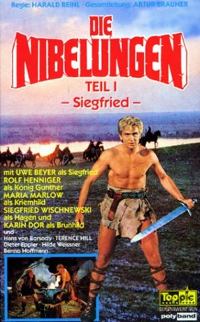

#7362 Die Nibelungen, Teil 1: Siegfried
 
 IMDB-Wertung: 6.3 / 10
IMDB-Wertung: 6.3 / 10  Metascore: 0
Metascore: 0 
Siegfried von Xanten bezwingt den Drachen Fafnir, der den sagenhaften Nibelungenschatz bewacht und badet anschließend in seinem Blut, das ihn unverwundbar macht. Als Siegfried sich am Hofe des Burgunderkönigs Gunther in dessen Schwester Kriemhild verliebt, bittet er diesen um ihre Hand. Gunther will allerdings nur einwilligen, wenn Siegfried im zur Hochzeit mit der Walküre Brunhild verhilft, die vorher im Zweikampf besiegt werden muss. Durch eine List Siegfrieds wird Brunhild geschlagen und es kommt zur Doppelhochzeit in Worms. Brunhild, die selbst in Siegfried verliebt ist, sinnt auf Rache und schmiedet gemeinsam mit dem heidnischen Ritter Hagen von Tronje finstere Pläne.
Jahr: 1966
Dauer: 89 Minuten
FSK: 6
Land: West-Deutschland Studio: Constantin FilmTonspuren:
Untertitel:
Auflösung: 1080p (1920x816) Größe: 5877 MB
Genre: Abenteuer, Fantasy
Regisseur: Harald Reinl
Drehbuch: Harald G. Petersson
Soundtrack:
Darsteller:
- Hans von Borsody als Volker von Alzey
 Terence Hill als Giselher
Terence Hill als Giselher- Skip Martin als Alberich
- Hilde Weissner als Königin Ute
 Karin Dor als Brunhild
Karin Dor als Brunhild Claus Holm als Gernot , uncredited
Claus Holm als Gernot , uncredited- Uwe Beyer als Siegfried
- Rolf Henniger als König Gunther
- Siegfried Wischnewski als Hagen
- Maria Marlow als Kriemhild
- Fred Williams als Gernot
- Dieter Eppler als Rüdiger von Bechlarn
- Samson Burke als Blo-Edin
- Barbara Bold als Hildegunt
- Ingrid Lotarius als Gudrun
- Maria Hofen als Frigga
- Djordje Nenadovic als Slaodel
- Milan Bosiljcic als Dankwart
- Benno Hoffmann als Mime
- Hans-Walter Clasen als Blo-Edin , uncredited
- Thomas Danneberg als Siegfried , uncredited
- Andrej Gardenin als (uncredited
- Bogdan Jakus als (uncredited
- Claus Jurichs als Giselher , uncredited
- Renate Küster als Kriemhild , uncredited
- Franz Nicklisch als Alberich , uncredited
- Christian Rode als Volker von Alzey , uncredited
- Rolf Schult als König Gunther , uncredited
Datei: X:\3-Trilogie(N-Z)\Nibelungen\Nibelungen, Teil 1 Siegfried, Die (1966, FSK6, 1920x816).mkv seit 20.10.2017
Festplatte: HD Collection-3(N-Z)-6(A-Z)
 Es gibt insgesamt 8 Filme in der Gruppe '3-Trilogie(N-Z)\Nibelungen'
Es gibt insgesamt 8 Filme in der Gruppe '3-Trilogie(N-Z)\Nibelungen'